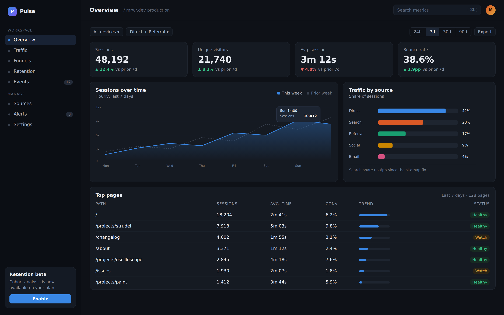
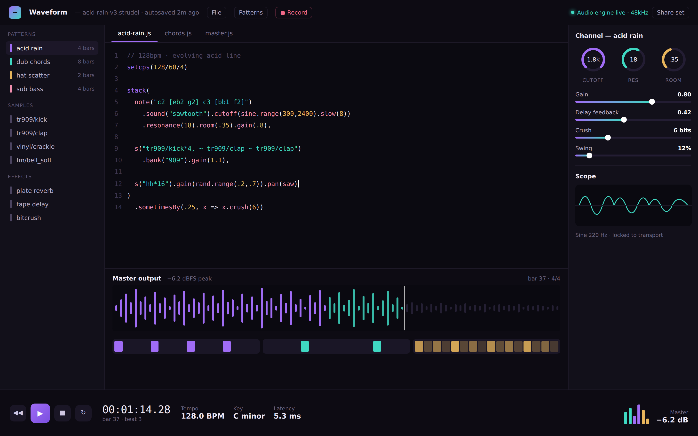
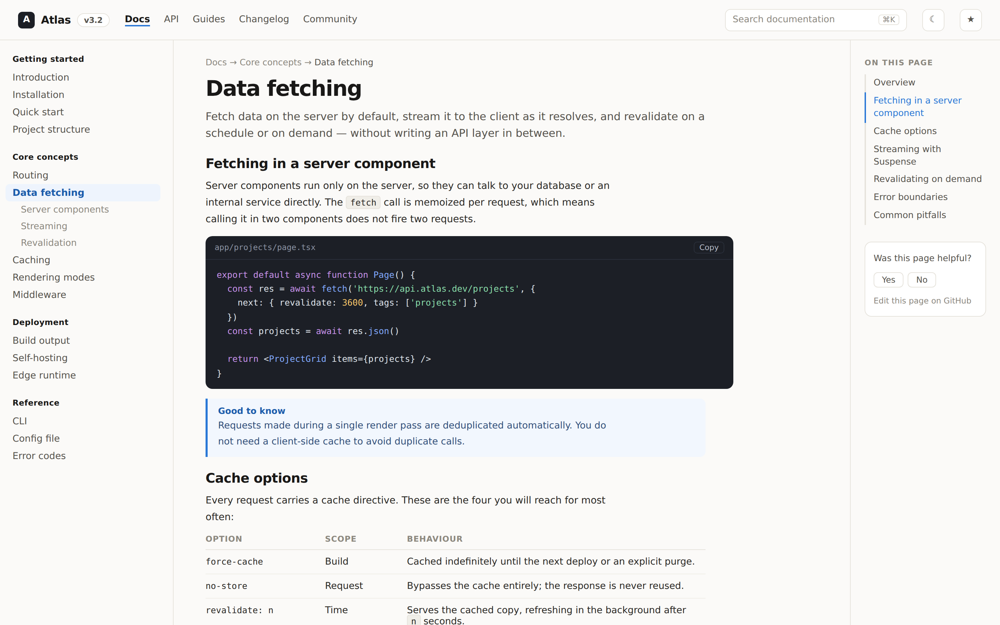
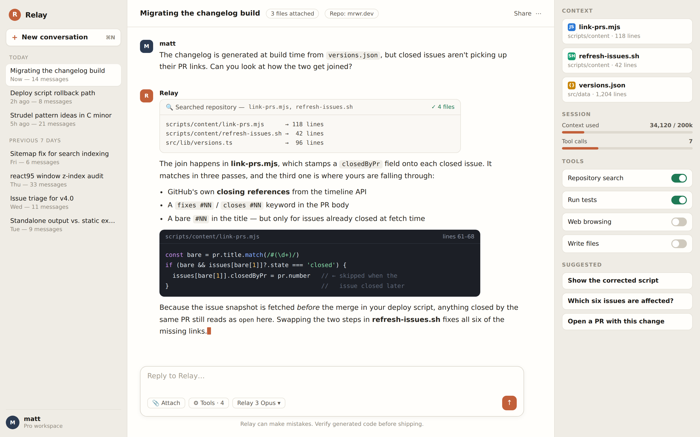
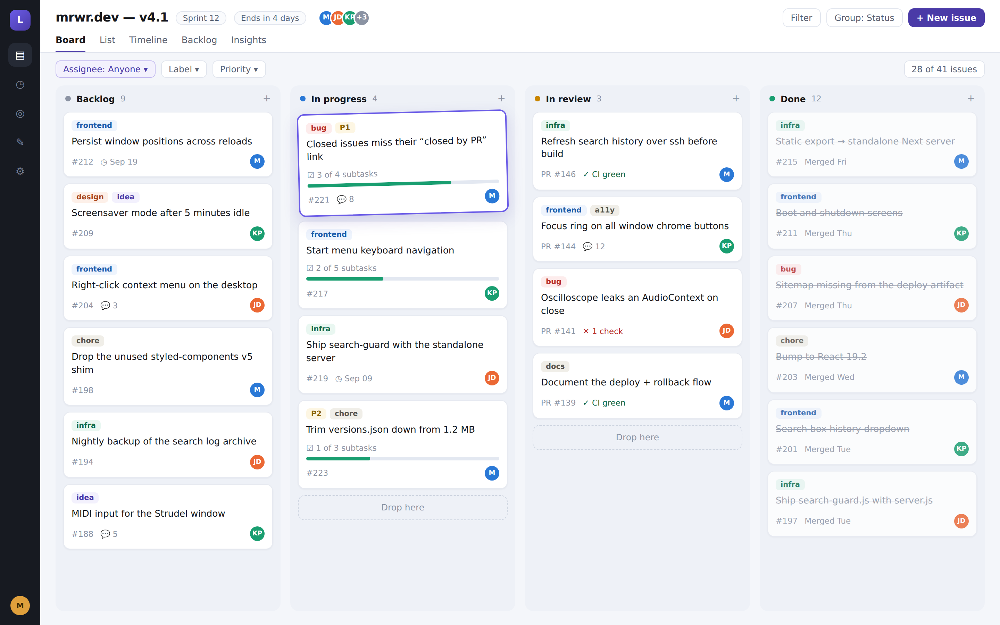
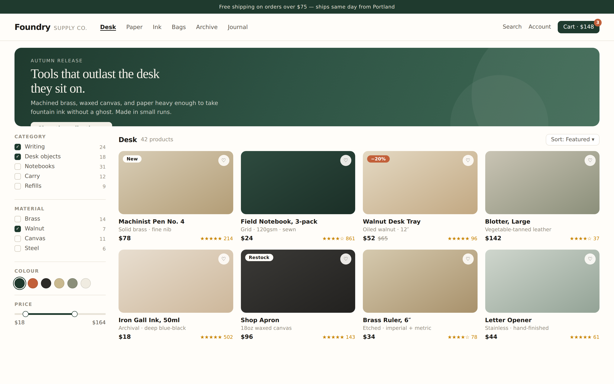
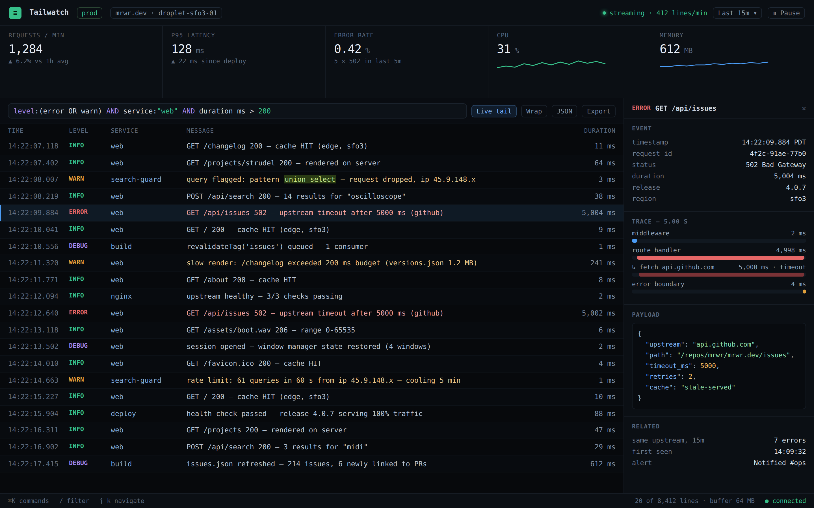
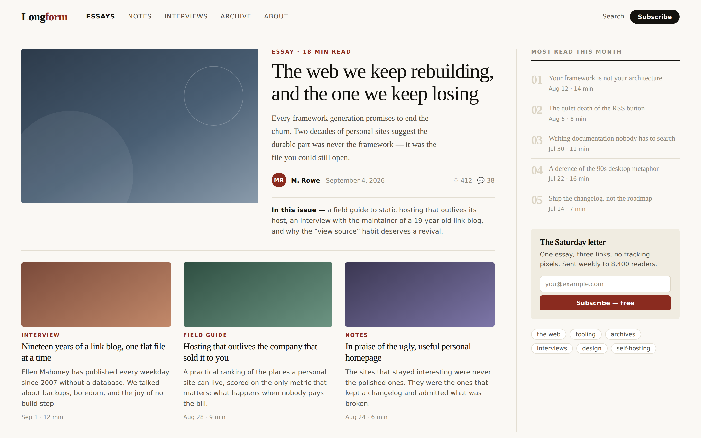
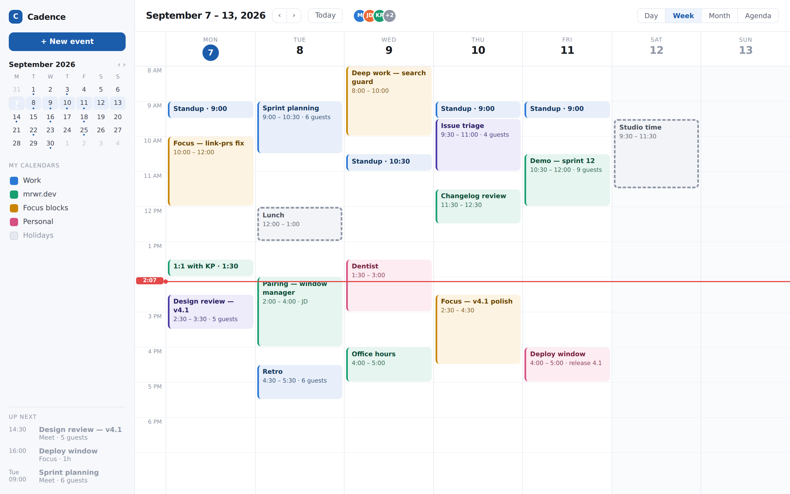

Pulse — analytics dashboard
KPI tiles, a time-series area chart with a hover readout, source breakdown and a sortable page table. The dark surface and palette are colour-vision-safe.

Waveform — live-coding studio
A Strudel-flavoured editor: pattern library, syntax-highlighted code pane, master waveform with a playhead, step lanes and a channel strip of knobs and faders.

Atlas — documentation site
Three-column docs layout: nested sidebar, prose column with code blocks and callouts, and an on-this-page rail. Content would come from MDX at build time.

Relay — assistant interface
Threaded conversation with tool-call cards, streamed code output, a context panel of attached files and token usage, and a composer with model and tool switches.

Lane — project board
Four-column board with labels, subtask progress, assignee avatars, a card mid-drag and a drop target. Naturally maps onto the GitHub issues the site already reads.

Foundry — storefront
Editorial commerce: full-bleed hero, faceted filters with counts and a price range, and a product grid with badges, ratings and sale pricing.

Tailwatch — live console
Monospace log tail with a query bar, level colouring and highlighted matches, plus a trace waterfall and JSON payload inspector for the selected event.

Longform — editorial
Magazine front page: serif lead story, article grid, a most-read rail and a newsletter block. The closest of the nine to a writing-forward personal site.

Cadence — scheduling
Week grid with overlapping events, colour-coded calendars, a mini month with event markers, a live now-line and an up-next rail.